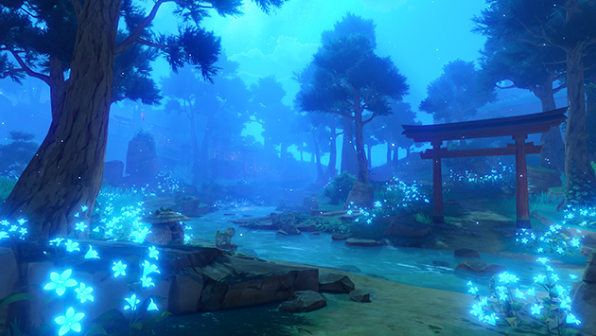
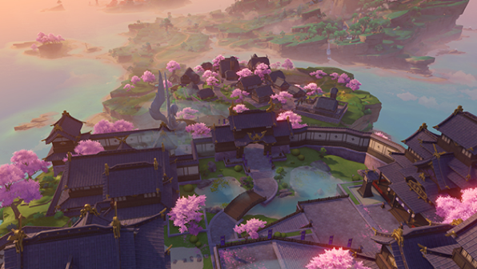
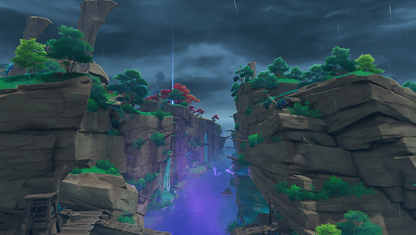
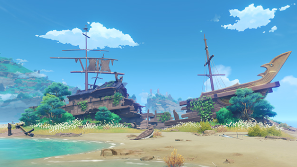

Inazuma

Chinju Forest

Inazuma City

Musoujin Gorge

Nazuchi Beach

Chinju Forest
A tranquil and mysterious forest located at the foot of Mt. Yougou.Here one can find Tanuki statues everywhere, torii gates scattered throughout the forest, and abandoned shrines hidden in the depths... Like a flowing river, they tell of legends meandering into a forgotten past.Rumor has it that when walking in Chinju Forest, you may encounter mysterious beings who like to play pranks...
Cider Lake